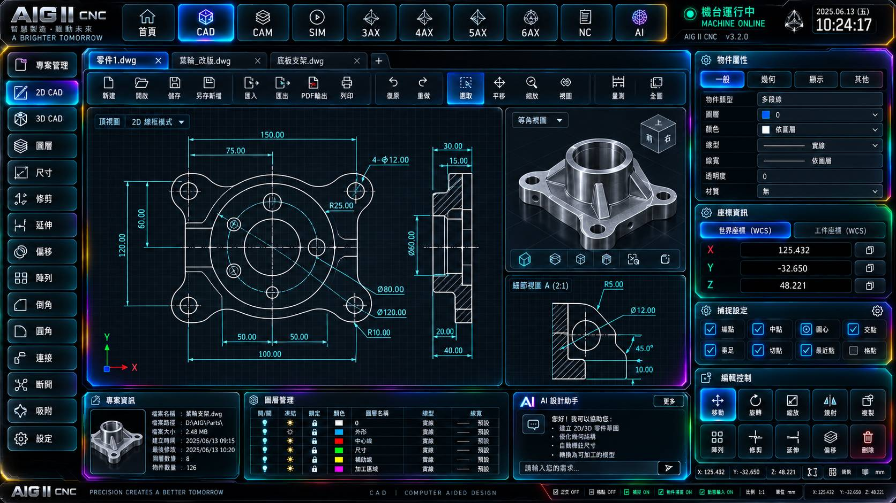
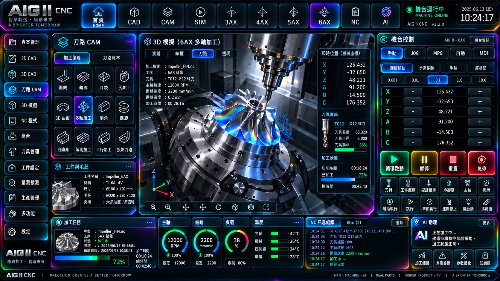

CAD 工作區 · 使用者參考圖已上站 · 視覺參考
來源明確的使用者圖像參考。不得代替最終手機／Windows Authority 或加工主程式。
AIG-CAD-USER-REFERENCE-20261019只展示有明確來源的網站實體圖片。10/5 核准風格與後續 Mobile／Desktop 修正版分開追蹤；任何缺少原始二進位的頁面一律標示缺圖，不能用歷史候選圖或已撤銷的 438 圖替換。
10/5 原始 RGB 二進位：尚未找到可驗 SHA 的完整原檔，MISSING_AUTHORITY，不可把較新的圖片改名當作 10/5 原圖。438 的 20 張撤銷 Authority 繼續封鎖。網站工作區已撤除；這裡只做圖資審核，不假裝 CNC UI 已完成。
兩張實際圖檔，沒有標記成最終 Runtime Authority

來源明確的使用者圖像參考。不得代替最終手機／Windows Authority 或加工主程式。
AIG-CAD-USER-REFERENCE-20261019
來源明確的使用者圖像參考。不得代替最終手機／Windows Authority 或加工主程式。
AIG-6AX-USER-REFERENCE-20261019已逐張核對原始位元組／像素／SHA，但尚未以圖片檔公開部署至網站
核准身分 SHA 與原始像素已驗證；非原生 4K。 網站不會借用舊圖補位。
00_LOGIN.pngac08f30f583440e58e4bb6e7c0d301edbc1838b95dbef4a601ec351519325225
MISSING_PUBLIC_BINARY · 不可作 Runtime核准身分 SHA 與原始像素已驗證；非原生 4K。 網站不會借用舊圖補位。
01_HOME.pngf360cb828ff6d05076792b0d04474503316dea85896f82f6452b0d6c9d7ae99e
MISSING_PUBLIC_BINARY · 不可作 Runtime核准身分 SHA 與原始像素已驗證；非原生 4K。 網站不會借用舊圖補位。
02_CAD.pngdc528b399e6a756d1bb76fc9260ae3361cf2437487236725dd0ee8ea2cbcaa75
MISSING_PUBLIC_BINARY · 不可作 Runtime核准身分 SHA 與原始像素已驗證；非原生 4K。 網站不會借用舊圖補位。
03_CAM.pngb9c27eb77c8a5bfc5dd932166cf7233c3b9506541ac979e5ac34bb1f82fc79af
MISSING_PUBLIC_BINARY · 不可作 Runtime核准身分 SHA 與原始像素已驗證；非原生 4K。 網站不會借用舊圖補位。
04_SIM.pngdd9ce3230ce97a77cd2650c840aa176710292766f52b142865603fdade7c8cb8
MISSING_PUBLIC_BINARY · 不可作 Runtime核准身分 SHA 與原始像素已驗證；非原生 4K。 網站不會借用舊圖補位。
05_3AX.png4f46a4c1f1ed7c71165108ed13f4809201794c16ebc397987d06d1be1f773e28
MISSING_PUBLIC_BINARY · 不可作 Runtime核准身分 SHA 與原始像素已驗證；非原生 4K。 網站不會借用舊圖補位。
06_4AX.pnga46c11e6f08b28dde24df066ac697c4b965079de1cb4df5091e58c7ab60d4a26
MISSING_PUBLIC_BINARY · 不可作 Runtime核准身分 SHA 與原始像素已驗證；非原生 4K。 網站不會借用舊圖補位。
07_5AX.pnge8d8b0304873cd6768d93d20a495fa8969c9ec72adb09ba9810da5b3b25ec5b3
MISSING_PUBLIC_BINARY · 不可作 Runtime核准身分 SHA 與原始像素已驗證；非原生 4K。 網站不會借用舊圖補位。
08_6AX.png73f34e958bb22925ceed32b986443240b9322a77bf0cadbc1b81f62501683be6
MISSING_PUBLIC_BINARY · 不可作 Runtime核准身分 SHA 與原始像素已驗證；非原生 4K。 網站不會借用舊圖補位。
09_NC.png51d5ba0f7917ec2608710fcd8826b1defc07bc9dd676870ceae649ab0d9391e3
MISSING_PUBLIC_BINARY · 不可作 Runtime核准身分 SHA 與原始像素已驗證；非原生 4K。 網站不會借用舊圖補位。
10_AI.png92eca87fc882446c5ef0483d80539a9adf45a0d55a3d64be8943155930a67763
MISSING_PUBLIC_BINARY · 不可作 Runtime與已撤銷的 438 Desktop 圖不同來源；目前都不是正式 3840×2160 核准 Authority
桌面 V1 獨立原檔已驗證，但未通過最後核准與 4K Gate。 網站不會借用舊圖補位。
AIG-AUTH-DESKTOP-HOME-V1.pngded539a2238c84a675a89995125e9d1fe0e3111d8dc68fe6e09372c1c4408466
MISSING_PUBLIC_BINARY · 不可作 Runtime桌面 V1 獨立原檔已驗證，但未通過最後核准與 4K Gate。 網站不會借用舊圖補位。
AIG-AUTH-DESKTOP-CAD-V1.png1e8d99ea8fb2372fea9c2a488040ccd7378c1c6c92e65bd9769a5d3df369da23
MISSING_PUBLIC_BINARY · 不可作 Runtime桌面 V1 獨立原檔已驗證，但未通過最後核准與 4K Gate。 網站不會借用舊圖補位。
AIG-AUTH-DESKTOP-CAM-V1.png2d55d1ac0d15faa16015538ad3b6c9f3e77d9259fd33a2dbccedbf756d818872
MISSING_PUBLIC_BINARY · 不可作 Runtime桌面 V1 獨立原檔已驗證，但未通過最後核准與 4K Gate。 網站不會借用舊圖補位。
AIG-AUTH-DESKTOP-SIM-V1.png88d94f538103e4f7bbd1f77d0b81be6226619e4ca29de92d07bf47cfa3210854
MISSING_PUBLIC_BINARY · 不可作 Runtime桌面 V1 獨立原檔已驗證，但未通過最後核准與 4K Gate。 網站不會借用舊圖補位。
AIG-AUTH-DESKTOP-3AX-V1.png17454e37ed230b17f70e5629fbefbec7627cf2a48d8fac59c0713b197765d6ad
MISSING_PUBLIC_BINARY · 不可作 Runtime桌面 V1 獨立原檔已驗證，但未通過最後核准與 4K Gate。 網站不會借用舊圖補位。
AIG-AUTH-DESKTOP-NC-V1.pngde89de892401fb900d5b70a22092a9cbc910628e68928dbf96cbba9034f07641
MISSING_PUBLIC_BINARY · 不可作 Runtime桌面 V1 獨立原檔已驗證，但未通過最後核准與 4K Gate。 網站不會借用舊圖補位。
AIG-AUTH-DESKTOP-AI-V1.png7f7a29219827cc72f027c525147eca5d9aa2994af62a94769c05d2ac8dc83f58
MISSING_PUBLIC_BINARY · 不可作 Runtime查核來源：AIG 個人 Library 中的 CURRENT_APPROVED/MOBILE 與獨立 Desktop/Main/V1；目前網站只保留查核紀錄與真正存在的公開圖檔。完整 SHA／狀態：AIG 嚴格圖資 Registry ↗。